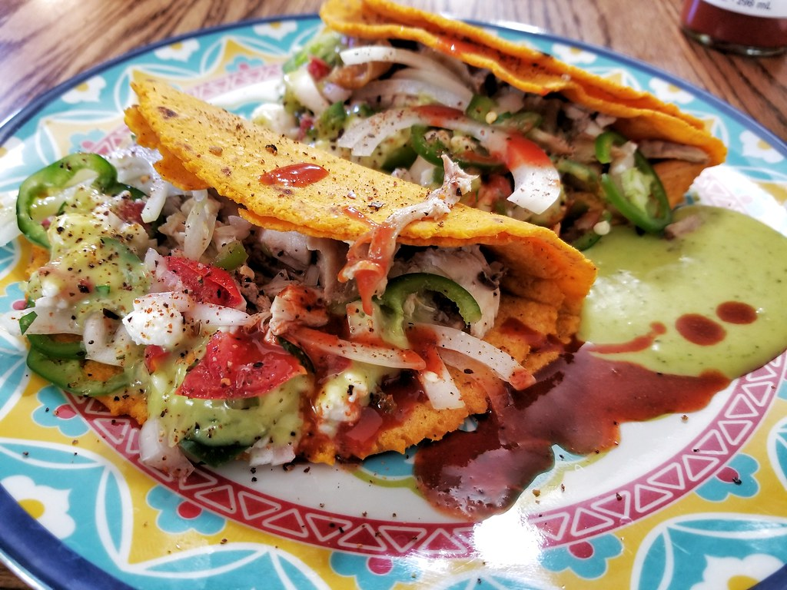

Chicken Tacos
Home

This slow cooker chicken tacos recipe is easy to make with just 4 ingredients for flavorful,
super tender, shredded chicken. Spoon the chicken into warm tortillas for a very tasty meal
any day of the week.
Ingredients
- Broth
- Taco seasoning
- Chicken
- Corn tortillas
Steps
- Gather all ingredients
- Combine chicken broth and taco seasoning mix in a bowl.
- Place chicken in a slow cooker. Pour chicken broth mixture over chicken.
- Cover slow cooker. Cook on Low for 6 to 8 hours. Shred chicken with two forks.
- Warm corn tortillas in a pan
- Serve shredded chicken in warmed corn tortillas
- Enjoy it!